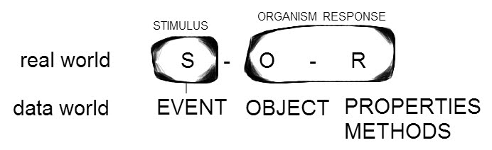

|
Journal - "Dream: feminine instinct and empathy helps to escape"
After studying event patterns for JavaScript programming, I had this “girl-geek” dream. Using feminine instinct empathy to escape.
A couple of mixed race (black woman and white male) who are my highschool friends, from way back, are very happy, and had a baby. They lose it in a building, that I happen to be in as well. It’s tricky to negotiate this building. I find this baby, and I find that as I try to leave, it becomes harder to get out. As I put more effort to get out, I feel more and more attached to the baby - that I am responsible for it - without personal involvement (it’s not MY baby, but I am responsible for it - a universal understanding among sisters of the Universe). As the dream moves on, and as I continue to make my way out of the building, the couple is no longer present, but the mother, who is now Chinese, sends me cryptic messages, that we will get out soon. I wonder if the couple still cares of the baby, or is it abandoned.
The building is made of object orientated structures. It is primarily a skeleton of Object Properties. To move from place to place, one enters a Method. In the dream, My environment flips between, the data structure, and real life. Properties are male designed. The are the framework of the building. Methods are a design of the feminine principle, as they are life movement. They can be made by males, and probably were, as they were not obvious to use - their names do not reference their function clearly. Like a martian wrote them, I thought to myself in the dream. I had to rely on instinct, female instinct, which is tied to nature and higher intelligence. I was able to figure out what method to pass myself and baby through, by where and how the Method was situated in the structure. I was able to figure out what route to take out. I had to follow Nature and natural science/math principles, which I have instinctively as a female. Males are great at engineering the designs, once the initial principle is clear. Females, are always the one with the accurate functional principle. That is as long as we are healthy. ie able to be ourselves as we naturally are, not as males want us to be.
Specifically, I had to move through the Methods that were wrapped in anonymous functions. Three parameters were always passed: the event object, myself object, and baby object. As we got close to an event, it would suck us in and loop us through, and return us in some other place. Object structures of baby and myself, remained the same (they do not always, depending on the method function) and with each step we were closer to exiting the building - which was not a simple linear exit. We worked through a labyrinth. Perhaps it could also be viewed as a conical fractal fibonacci sequence, but I always referred to it as a labyrinth in this dream. As I made my way through, it was apparent that this was a much harder challenge than it appeared to start. Initially I believed that I could freely exit the building at any time, by normal methods. Not so.
This place started feeling more and more dangerous. Perhaps it was introducing brainwashing techniques with the names of the functions. Perhaps they were the scriptic religious phrases that controlling people use in cults. The more closer you are out, the harder it is to get out. If you do not resist, you remain in, but as a controlled identity. Still these psychological mechanisms are built on natural foundations. Perhaps there was no controlling mechanism in place, but it just felt that way, because of the restrictions. But control is what makes man feel safe. Safety is what is needed for life to grow, but it cannot be controlled growth. What was the exact use of this object structure? I could not tell for sure. I therefore did not enter any psychological profiles of the perceived builder into my escape plan. I just responded to how a structure would naturally grow. (Perhaps in another dream, I would end up in a psychological profile data structure - I’m ready). If I know how it can take me in, I can also pick the places at that particular time-space that is not immediately relevant to the higher mission of the structure, and move me in a mathematical direction, closer to getting out. For me it meant going into a labyrinth, jumping over some things in the center, to get myself on the outward spiral of the labyrinth. All choices of which methods I jump into. I could not just jump over into another path in the labyrinth. It had to be on a relevant number. Say from 3 on one line , to 11 on another (the moon earth ratio). There were many natural number patterns, using whole numbers in nature. I used them. I would look around a room I was in. Look at the corners, look at any paths. Where were the methods visible? There were always some there. I had to choose, and I chose by assuming some natural mathematical sequence of how the rooms were attached to each other. The methods could pass me and baby over/through/around some data structure object. Here I concluded that a labyrinth would take me up and inward, and then I could hop onto another math sequence that was tangent to the exterior, so I could use a method to pop out there. I had to go back into and on top of the building, to get my way out. I did not have to fight; instead, I just negotiated the pathways already present. I knew instinctively, that the path out, would not be at the top center, but off to the side by some golden mean ratio, or equivalent. Of course, there were some events along the way, with only 1 or 2 parameters. They seemed to provide an easy way out. I never took those. I always needed at least 3 parameters, the event object, one for baby and one for myself. Again, the feminine instinct playing. The event object I needed for additional resources that may be helpful. The baby was needed, as it was my key to universal intelligence and emotional intelligence. I viewed the baby, not as a dependent, but as an important piece of my whole within the universe at the time. It was not an emotional or a motivation method, but just an acceptance of truth. I spent a lot of time listening, and developed a way to communicate with event listeners, which was pretty amazing as they were designed to be part of the building data structure, not as a tool for myself to use. Still, we are all data objects, so in principle can communicate with each other… somehow. Listening, observing - quietly. All the time, the data structure was a real life entity as well, in parallel, and I flipped back and forth in my dream, between the data structure I was negotiating, and the real world. Nobody in the real world seemed to be aware of the parallel data structure.
Methods are movement, are life. Life is feminine instinct principle. As I felt more restricted, I felt increased feeling of responsibility towards the baby. It was the baby that I needed to get out. I was less and less concerned for myself, as for the baby. I had to carry and move the baby, so had to be alert and healthy to do so, but it was NOT MY baby, but my larger responsibility. As I grew more feminine in that feeling, I developed more instinctive intelligence. I could see nature’s patterns more easily. I ‘just knew’ which patterns were the right ones to move me around as I wished. I became more and more with one with universal intelligence, and therefore with my abilities to get out of this structural data object trap. I knew that the answer of universal intelligence is SIMPLE. I had to observe accurately, to find the simple answer.
For example. A rat maze, has no order. One could go by trial and error to find way out. The inventive person could use a balloon to rise above and over it. But perhaps nothing is a rat maze, and we only perceive it that way. The belief that there is order in nature, that we just need to find it. The question in regards to this building is, how much is it a man-made rat maze, and how much of it is a maze, that still must follow some mathematically describable principles in Nature. A labyrinth, fractal, fibonacci shell, astrological patterns… all using real whole numbers. I could only use whole numbers, as the baby and myself, cannot be chopped up into fractions and then reassembled. We are whole structures.
Finally I did make it out of the data structure. By this point in the dream, I was overwhelmed emotionally, as the responsibility for the baby increased with each Method pass, yet at the same time, I felt fearless, about my own being. Instinctively I knew the universe was on my side, although at the moment, the practical movement to get myself and baby out were the present focus. As I continued to walk away from the building, which is now in real life, I am holding the baby and crying, emotionally overwhelmed. The baby’s Chinese mother was emotionally overwhelmed and walking by me. She passed me, perhaps unaware that I was out with her baby. Did she try to get the baby herself in the building? There was a time in the building that I did think this baby was abandoned, but now I did not know. I did not care, because the baby is part of the universal sisterhood. Nobody owns it. I woke up.
Now awake, I notice that I am choked up because I was crying hard while dreaming. However, everything made sense, and I was not sad at all. The whole puzzle was simple, yet hard to practically execute. Obviously I did it anyways. It also became clear, that only another woman could possibly understand the strength, physical, emotional and mental stamina which I received to accomplish this task - that I received it by being part of the universal sisterhood.
Males understand the data structure, and the process of negotiating it, like they do in computer games; however, they cannot understand the ability to acquire the practical by holding onto a baby. To them it is always a fight. Like a bulldozer powering through obstacles, or climbing over large mountains etc. You fight, you travel, you rest and eat. That is the male landscape. They cannot understand the sisterhood of holding babies. To them, they are things to be owned, along with anything else they see and desire. An obsessive love. They create rules, within political and religious structures, to help them understand this life instinct, but that is counter-indicative of the phenomenon they wish to endure. My feeling is that this structure was not an evil structure, but a structure of men, using their Object Properties, to understand what life Methods are. The data-structure building becomes counter-indicative to its purpose, but the intent is not evil; just misguided.
This also implies, that data structures, that parallel reflect real life, can have properties and methods that work together effortlessly, in a universal understanding of nature. In fact, this is the default. We just don’t see it much in many parts of today’s real world.
I am so glad I have always had a strong sisterhood sense. Whoever a baby falls upon, instinctively it becomes that person’s responsibility. It is NOT a structure Property, but a Method. No ownership structure. Usually a baby is in the hands of the birth mother, but not always. The birth mother could have died, is not capable etc. The feeling of responsibility was so strong in my dream. I became emotionally overwhelmed, but fearless. Just do what I have to do, observe, and know that the answer in simple.
Anda :)
Sept 2015
Connecting the real world using psychological recursive loop, stimulus - organism - response, to data world, using object data models.

Journals Home |